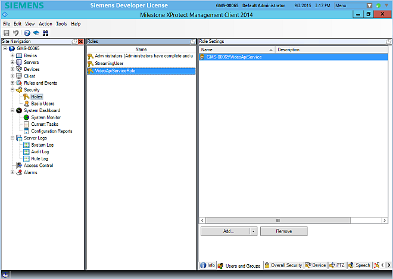

Configuring a Partial Video Database Alignment
In installations with a large number of video cameras, you may want to acquire and control only some of the video cameras from the management platform. The rest of the cameras can be used from the VMS stations.
This special solution requires the configuration steps described in this section, based on a dedicated Security Role in VMS. Note that the following limitations apply:
- The required security configuration is only possible on the following VMS license editions:
- Siveillance Video Pro (formerly VMS 300)
- Siveillance Video 200 Advanced (formerly VMS 200)
- Siveillance Video 200 Advanced Embedded (formerly VMS 200 embedded)
- Milestone XProtect Corporate
- Milestone XProtect Expert
- Events pertaining to non-managed devices will still display in the management platform, for example, Device xyz Input n active.
- Devices pertaining to non-managed video sources will still be visible in the list in the Video Configurator. However, those devices will have no child objects in the structure.
To do a partial configuration alignment, proceed as follows:
Remove the Administrator Role for the VideoApiService User
- A standard VMS configuration was set as described in Configuring the VideoApiService Account.
- You want to reduce the access of the management platform to a limited number of video cameras.
- Start the VMS Management Client.
- In the Site Navigation tree, select Security > Roles.
- In the Roles pane, select the Administrators role.
- In the Role Settings pane, select the VideoApiService user.
- Click Remove and confirm you want to remove the user from the administrator list.
Create a new Security Role for the VideoApiService User
- In the Roles pane, right-click and select Add Role...
- Enter the name VideoApiServiceRole.
- Click OK.
- The new VideoApiServiceRole role displays in the Role list.
- In the Role Settings pane, select the Users and Groups tab.
- Click Add... > Windows user.
- In the Select Users or Groups dialog box, select the VideoApiService user account and click OK.
- The VideoApiService user displays in the Role Settings list.

Configure the Security Role Management Capabilities
- In the Role Settings pane, select the Overall Security tab.
- Select the Management Server security group.
- Select all the Allow check boxes.
Configure the Camera Visibility
- In the Role Settings pane, select the Device tab.
- Expand the camera structure and select the first camera in the list.
- Do one of the following:
- Select all check boxes if you want the camera to be visible and controlled by the management platform.
- Clear all check boxes if you do not want the camera to be visible and controlled by the management platform.
- Repeat the previous step for all cameras.
Configure the PTZ Control
- In the Role Settings pane, select the PTZ tab.
- Expand the camera structure and select the first camera in the list.
- Do one of the following:
- Select all check boxes if you want the PTZ commands to be enabled.
- Clear all check boxes if you do not want the PTZ commands to be enabled.
- Repeat the previous step for all cameras.
Configure External Events
- In the Role Settings pane, select the External Events tab.
- Expand the list structure and select the first event type.
- Set all check boxes.
- Repeat the previous steps for all event types.